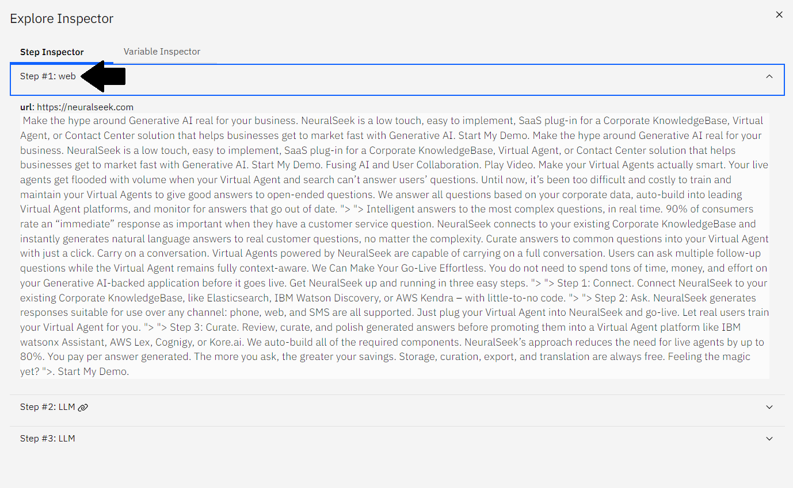
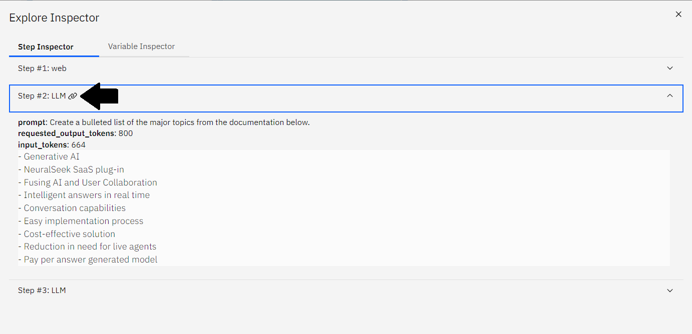
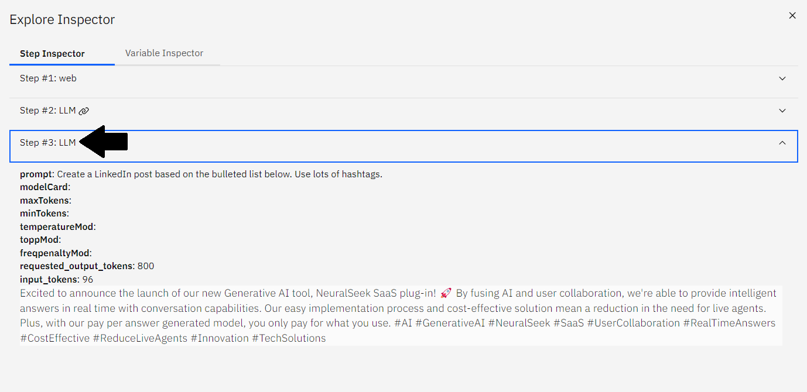

3.1 - mAIstro Tour
Users will walk through an initial tour of mAIstro to learn how to effectively configure different nodes, modify natural language prompts to the Large Language Model, and generate content within the mAIstro's unique editors.
Visual Editor
The Visual Editor is the easiest way to use mAIstro. In the Visual Editor, nodes connect horizontally (called chains) and vertically. Nodes are executed starting in the upper left. As the execution runs, for each vertical level any chain existing at that level will be evaluated before continuing down.
Add a Node
On the sidebar menu, navigate to the Get Data section.
- Click on the Website Text node. The node will populate as a box inside the Visual Editor.
{kind=link}
Configure the Website Text Node
Click on the node box, and a properties panel will appear on the side.
- Add a URL to the configuration, for example:
https://neuralseek.com.
{kind=link}
Add a Second Node
On the sidebar menu, navigate to the Generate Data section.
- Click on the Send to LLM node. The new node will populate as a box inside the Visual Editor.
{kind=link}
Chain the LLM Node
Click on the LLM node, and drag it to attach to the right side of the Website Text node, forming a chain.
{kind=link}
Configure the LLM Node
By clicking on the node, a properties panel will appear.
- Add a prompt inside the panel to make a bullet list from our scraped website. For example:
Create a bulleted list of the major topics from the documentation below.
{kind=link}
Add a Third Node
On the sidebar menu, navigate to the Generate Data section.
- Click on the Send to LLM node. The new node will populate as a box inside the Visual Editor.
{kind=link}
Configure the LLM Node
Notice how the second LLM node populated below the horizontal chain.
- Click on the node and a properties panel will appear.
- Add a prompt inside the panel to make a LinkedIn post based on the bulleted list generated from the scraped website. For example:
Create a LinkedIn post based on the bulleted list below. Use lots of hashtags.
{kind=link}
Evaluate the mAIstro Flow
Let's run our flow!
- Click the blue Evaluate button on the bottom bar. Your generated content appears in this panel.
{kind=link}
Download Generated Contents
Optionally, you can also download it in MS Word or CSV formats.
- Click the Microsoft Word option next to Output Format to download the newly generated content as an MS Word document.
{kind=link}
Debug the Flow
Click on the bug icon in the top right corner to see the full path of the evaluation, plus all the context variables.
- Click on each step to expand the full evaluation.
- Step #1: web
- Notice the contents generated from the scrape of the given URL, in this example
https://neuralseek.com. - 
- Notice the contents generated from the scrape of the given URL, in this example
- Step #2: LLM
- Notice the chain link icon next to this step to indicate that this is a chained node.
- The contents generated show a bulleted list of major topics from the documentation that was pulled from the scraped website, just as the prompt indicates.
- 
- Step #3: LLM
- Notice the contents generated here are the same as the resulting contents from clicking the Evaluate button. This is due to it being the final step in the flow.
- The generated contents show a LinkedIn blog post with lots of hashtags based on the bulleted list of major features generated in Step #2, just as the prompt indicates.
- 
{kind=link}
{kind=link}
{kind=link}
Save the Template
You can save templates for future use and to call by name via the API by clicking on the Save button on the bottom bar.
- Add a unique name to the template, for example:
Lab_Tour. - Optionally add a unique description for ease of navigation. For example:
A LinkedIn post based on a list of features from NeuralSeek's website..
{kind=link}
You can also download an OpenAPI spec of the flow with all the required parameters to easily import into other tools, like a virtual agent, by clicking on the Generate OpenAPI Spec button on the bottom bar.
{kind=link}
Continue to Explore
This covers the basics of the mAIstro.
- Click Next to continue to the wide variety of output generation with various example templates, data selection options, modifications to the data, and unique generative data prompts on NeuralSeek's mAIstro platform.